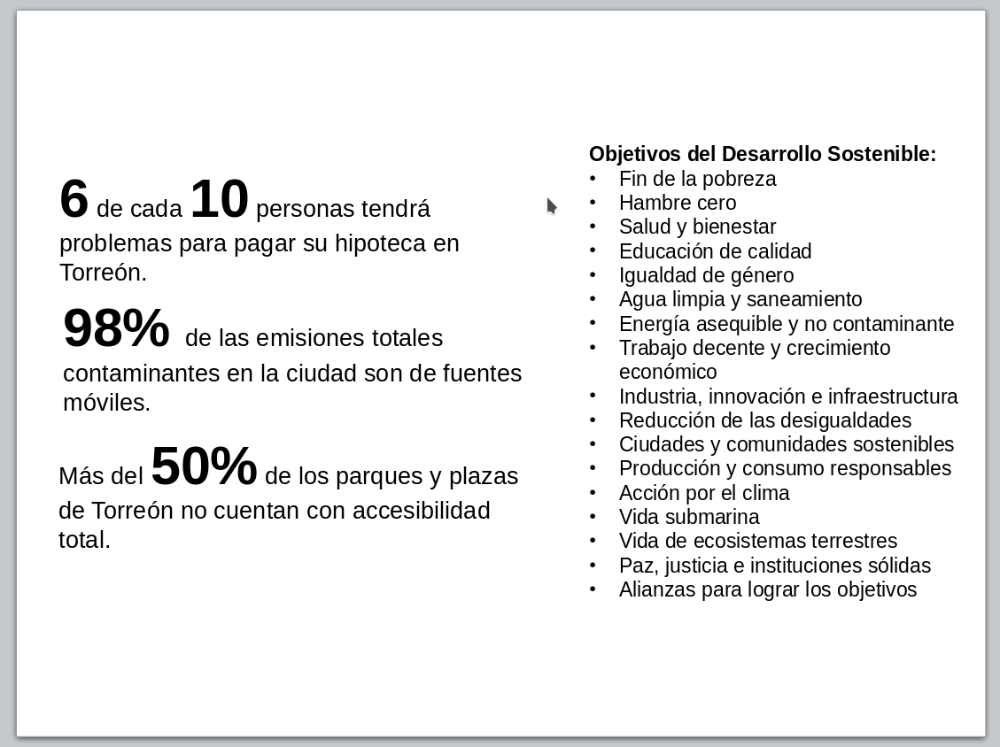

Objetivos del Desarrollo Sostenible
Los Objetivos de Desarrollo Sostenible (ODS) son 17 propósitos globales que forman parte de la Agenda 2030 para el Desarrollo Sostenible, propuesta por la Organización de las Naciones Unidas (ONU) en 2015. Pretenden incidir en 3 temas principales: Erradicación de la pobreza extrema, protección del planeta y prosperidad para todos (ONU, 2015). A su vez, cada uno de los objetivos tiene metas específicas a lograr en un horizonte de 15 años.
Aunque los ODS son aplicables en todo el territorio global, es en las ciudades donde se dan grandes problemáticas y desequilibrios a los cuales la agenda pretende atender. En 2017, casi 55% de la población mundial reside en ciudades, mientras que en América Latina la cifra aumenta a más del 80%. Atendiendo a esta realidad, la Agenda 2030 contiene un objetivo específico para el tema urbano: Objetivo 11: Lograr que las ciudades y los asentamientos humanos sean inclusivos, seguros, resilientes y sostenibles.
Metas
Para lograr este objetivo, se fijaron 10 metas que deben ser cumplidas en los próximos 12 años con el fin de tener una ciudad con oportunidades, acceso a servicios básicos, energía, vivienda y transporte. ¿Cómo puede Torreón alinear su visión de ciudad con la Agenda 2030 y los ODS?
1. Asegurar el acceso de todas las personas a viviendas y servicios básicos adecuados, seguros y asequibles y mejorar los barrios marginales.
En Torreón, 6 de cada 10 personas tendrá problemas para pagar su hipoteca, con un 5.98% de probabilidad de incumplimiento.
En servicios básicos, se cuenta con una cobertura casi total, con 99.8% de viviendas con energía eléctrica, 98.5% de viviendas con drenaje con conexión a la red pública y 99% de viviendas con agua potable de la red pública (INEGI).
2. Proporcionar acceso a sistemas de transporte seguros, asequibles, accesibles y sostenibles para todos y mejorar la seguridad vial, en particular mediante la ampliación del transporte público, prestando especial atención a las necesidades de las personas en situación de vulnerabilidad, las mujeres, los niños, las personas con discapacidad y las personas de edad.
Torreón enfrenta el gran reto de elevar los viajes en transporte público, así como generar un modelo de sistema de transporte público integrado. Actualmente se avanza en la construcción del primer eje troncal (BRT-Metrobus).
Los grupos en situación de vulnerabilidad enfrentan grandes problemáticas en el transporte urbano del municipio; actualmente se lleva a cabo el programa “Ciudades y Espacios Públicos Seguros para Mujeres y Niñas” a través de ONU-Mujeres.
3. Aumentar la urbanización inclusiva y sostenible y la capacidad para la planificación y la gestión participativas, integradas y sostenibles de los asentamientos humanos en todos los países.
A través del estudio Índice de Ciudades Prósperas (CPI) de ONU-Hábitat, Torreón recibió una calificación reprobatoria en la subdimensión de “Gobernanza de la urbanización” con cero puntos sobre cien.
4. Redoblar los esfuerzos para proteger y salvaguardar el patrimonio cultural y natural del mundo.
En Torreón, han sido demolidos un total de 24 inmuebles con valor histórico conforme al listado del INAH, sin embargo muchos más han sido destruidos y siguen demoliéndose debido a la inoperancia de los mecanismos de protección patrimonial.
En materia medioambiental, el municipio sufre uno de los procesos de desertificación más críticos del país: el sobre-pastoreo que excede un 400% la capacidad de carga recomendada y la tala excesiva en la sierra madre occidental.
5. Reducir significativamente el número de muertes causadas por los desastres, incluidos los relacionados con el agua, y de personas afectadas por ellos, y reducir considerablemente las pérdidas económicas directas provocadas por los desastres en comparación con el producto interno bruto mundial, haciendo especial hincapié en la protección de los pobres y las personas en situaciones de vulnerabilidad.
Para diagnosticar y establecer estrategias de prevención, reducción y mitigación de riesgos y peligros, es necesario contar un Atlas de Riesgo a nivel municipal, del cual existe información no actualizada y escasa.
6. Reducir el impacto ambiental negativo per capita de las ciudades, incluso prestando especial atención a la calidad del aire y la gestión de los desechos municipales y de otro tipo.
Torreón cuenta con 9 equipos manuales y una estación automática de medición de calidad del aire en partículas suspendidas totales (PST) y partículas menores a 10 micras (PM10). 98% de las emisiones totales son de fuentes móviles mientras que el 75% de la contaminación ambiental es generada por las mismas.
7. Proporcionar acceso universal a zonas verdes y espacios públicos seguros, inclusivos y accesibles, en particular para las mujeres y los niños, las personas de edad y las personas con discapacidad.
El municipio vive un proceso de “privatización” del espacio púbico debido a la construcción de fraccionamientos habitacionales cerrados que clausuran sus espacios públicos (parques y plazas). Más del 50% de los parques y plazas de Torreón no cuentan con accesibilidad total.
8. Apoyar los vínculos económicos, sociales y ambientales positivos entre las zonas urbanas, periurbanas y rurales fortaleciendo la planificación del desarrollo nacional y regional.
Es urgente establecer un modelo de planeación metropolitana y regional en estrecha coordinación con los diferentes municipios que forman la Zona Metropolitana de la Laguna; con acciones específicas como planes y reglamentos homologados.
9. Aumentar considerablemente el número de ciudades y asentamientos humanos que adoptan e implementan políticas y planes integrados para promover la inclusión, el uso eficiente de los recursos, la mitigación del cambio climático y la adaptación a él y la resiliencia ante los desastres.
10. Proporcionar apoyo a los países menos adelantados, incluso mediante asistencia financiera y técnica, para que puedan construir edificios sostenibles y resilientes utilizando materiales locales.
